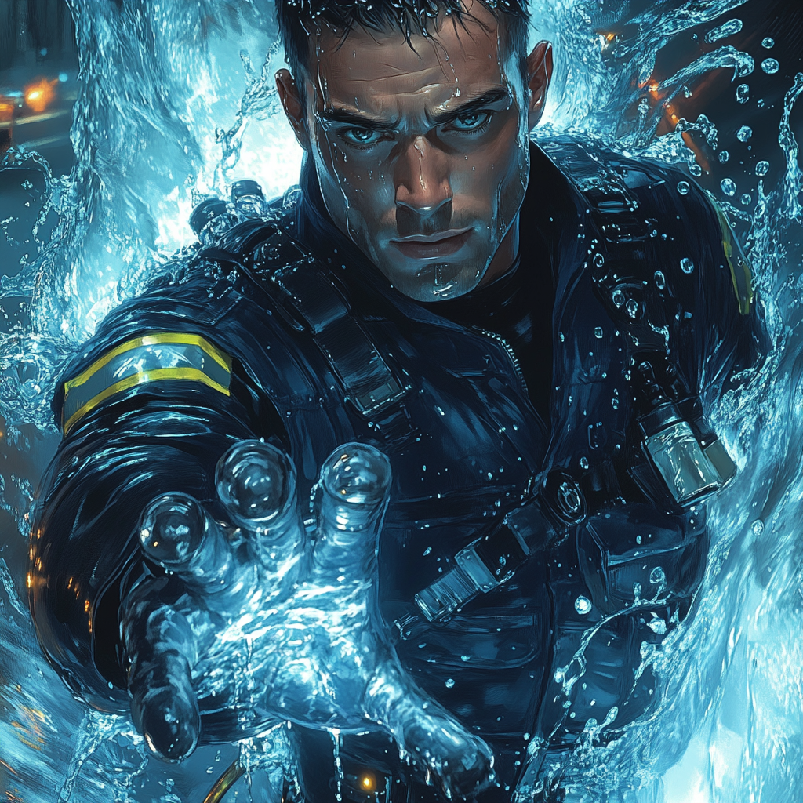

9-Alarm: The Hotshot's Rise

Fire in the Blood
Lester McBurney came from three generations of Boston
firefighters. He served at Engine Company 41 in East Boston,
where his aggressive tactics and willingness to push limits
earned him a reputation as a hotshot. His fellow
firefighters admired his courage, while supervisors worried
about his tendency to bend protocols.
Point of No Return
The chemical facility fire brought multiple companies to the
harbor. While Engine 28's team approached from the south
entrance, Lester led Engine 41 through the loading dock. He
ignored orders to wait for hazmat approval, convinced
victims were trapped inside.
The chemical explosion caught both teams. Lester experienced a strange connection to the liquid around him as deadly compounds mixed with firefighting water. His body absorbed the contaminated water, transforming it into pure force.
Raw Power
Lester woke in Massachusetts General's burn unit beside
Connor Flanagan from Engine 28. Both had survived impossible
chemical exposure. During recovery, Lester discovered he
could project high-pressure water blasts and generate
protective barriers.
Unlike Flanagan's precise control, Lester's powers manifested as raw force. He could unleash devastating water pressure but struggled with fine manipulation. His enhanced strength and reflexes complemented his aggressive firefighting style.
Baptism by Fire
His first post-accident response came during a warehouse
blaze. Lester charged in, using water blasts to clear
burning debris and create escape routes. His forceful
approach contrasted with Flanagan's methodical rescue
techniques, but both proved effective in their own way.
The Boston Fire Department recognized the value of having two enhanced firefighters with complementary styles. They supported both joining the Boston Avengers Academy, seeing them as a bridge between conventional and superhuman emergency response.
Trial by Water
At BAA, Lester's brash attitude clashed with traditional
training methods. Yet his frontline experience and raw power
earned respect. He formed an unlikely partnership with
Flanagan—one methodical, one aggressive, but both dedicated
to saving lives.
He modified his turnout gear with reinforced plating to handle his water pressure powers. The department still calls him for major fires, where his ability to deliver massive water volume proves invaluable for containment.
His quarters at BAA reflect his personality—sparse but functional, with firefighting gear always ready. He maintains close ties with Engine 41, often training with regular firefighters to stay grounded in conventional techniques.
Despite his enhanced abilities, Lester remains the same adrenaline-seeking hotshot who charged into that chemical fire. His powers give him new ways to be aggressive in pursuit of saving lives. As "9-Alarm," he represents the raw power of emergency response, complementing Floodline's precision to protect Boston from any threat, mundane or extraordinary.